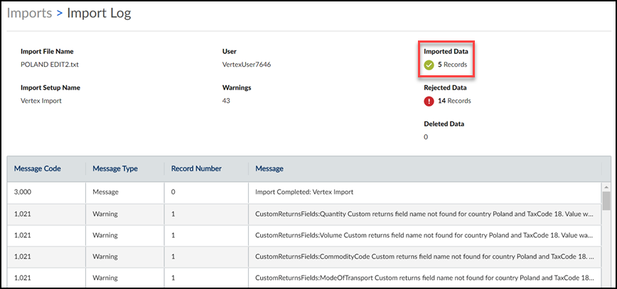
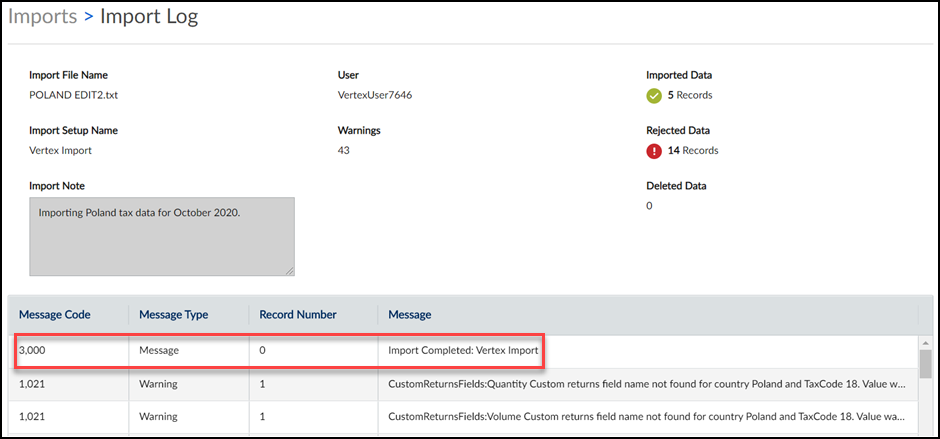

Problem
There are errors and warnings from my import.
Cause
Errors and warnings can occur for a variety of reasons, including data or configuration issues.
Solution
To view more information about errors in your import, complete the following steps:
On the Imports page, locate your import by the Import Date and Time and the Import Set-up Name.
Note: If you do not see your import on the Imports page, the import event failed. A common cause of this is that you selected the wrong import setup type for the import.
In the Actions column, click the three dots (...) and select View Import Error Log.
The Import Log page opens.
Locate the Imported Data field to view how many records successfully imported. Click the imported records count to view your imported data on the Tax Data Details page.
If the Imported Data field is blank but the Rejected Data field has a number, your import failed.

In the Import Log, a message also indicates that your import completed successfully. See the figure below for an example.

Related topics: